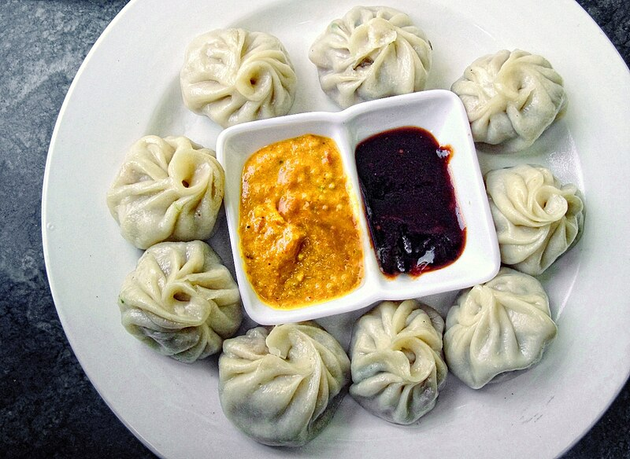

Home
Momo

Momo: The Iconic Dumpling of Nepal
Momo, a cherished dish in Nepal, is a type of dumpling that has become a
staple in Nepali cuisine. It is believed to have been introduced by
Tibetan immigrants, but it has since been fully embraced and adapted by
the people of Nepal. These dumplings are filled with a variety of
ingredients, most commonly minced meat like chicken, buffalo, or pork,
mixed with flavorful spices and herbs. Momo can be steamed, fried, or even
served in a soup, making it a versatile and beloved street food or family
meal.
The secret to Momo's distinct flavor lies in its spiced filling, which
includes a mix of ginger, garlic, onions, and a dash of spices like cumin
and garam masala. Momo is often served with a tangy dipping sauce made
from tomatoes, sesame seeds, and chili, adding an extra layer of heat and
richness. Whether enjoyed as a snack or part of a larger meal, Momo
represents the heart of Nepali comfort food, offering a satisfying
combination of textures and tastes that are sure to delight.
Ingredients
-
Minced meat: (chicken, buffalo, pork, or vegetables for
vegetarian version)
-
Wrapper: All-purpose flour and water (for the dough)
- Aromatics: Garlic, ginger, onions, green onions
-
Spices: Cumin, coriander, turmeric, garam masala, chili
powder
-
Vegetables: Cabbage, carrots, and sometimes mushrooms
(for vegetarian momo)
-
Sauces: Soy sauce, sesame oil, and a tangy tomato-based
dipping sauce (with chili, garlic, and sesame seeds)
Preparation Steps
-
Prepare the filling: In a large mixing bowl, combine
the minced meat (or vegetables for a vegetarian version) with finely
chopped garlic, ginger, onions, and green onions. Add spices like cumin,
coriander, garam masala, turmeric, and chili powder to the mixture.
Optionally, add finely chopped vegetables like cabbage or carrots for
added texture.
-
Prepare the dough: In another bowl, mix together
all-purpose flour, water, and a pinch of salt to form a smooth, elastic
dough. Knead the dough for about 5-10 minutes until it becomes soft and
pliable. Cover with a damp cloth and let it rest for 15-20 minutes.
-
Form the momo wrappers: Divide the dough into small,
equal-sized balls. Roll each ball into a thin round wrapper, about 3-4
inches in diameter. Make sure the edges are thinner than the center to
allow easy folding.
-
Fill the momo: Place a spoonful of the filling in the
center of each wrapper. Carefully fold the edges to create a pleated,
half-moon shape, pinching the sides to seal the momo. If making round
momos, pinch the edges together to form a closed pouch.
-
Steam the momos: Prepare a steamer by lining the base
with parchment paper or lightly greasing it to prevent sticking. Arrange
the momos in the steamer basket, ensuring they do not touch each other.
Steam for 12-15 minutes, or until the dough becomes firm and the filling
is cooked through.
-
Serve: Once steamed, remove the momos from the steamer
and let them cool for a few minutes. Serve hot with a tangy dipping
sauce made from tomatoes, sesame seeds, garlic, and chili, or enjoy them
with achar for an added punch of flavor.